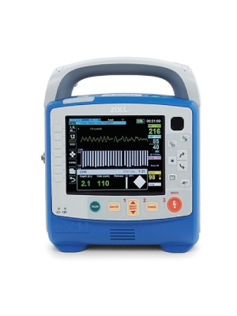

Zoll
Advanced and versatile monitor/defibrillator provides fast and efficient first aid in cases of heart attack or cardiac arrest. Easy-to-use and intuitive design suits both professionals and first responders without special training.
.jpg)
Choose a reliable partner for emergencies! Explore our selection of top-rated and professionally designed monitors/defibrillators. Choose us as your partner and ensure that you are always ready to act when needed.
Below you will find our selection, which includes monitor/defibrillators from the three largest and most proven manufacturers. You can choose a brand and model that suits your needs and preferences. We're here to assist you in selecting the most suitable option if needed.
Advanced and versatile monitor/defibrillator provides fast and efficient first aid in cases of heart attack or cardiac arrest. Easy-to-use and intuitive design suits both professionals and first responders without special training.
Advanced and versatile monitor/defibrillator provides fast and efficient first aid in cases of heart attack or cardiac arrest. Easy-to-use and intuitive design suits both professionals and first responders without special training.
Advanced and versatile monitor/defibrillator provides fast and efficient first aid in cases of heart attack or cardiac arrest. Easy-to-use and intuitive design suits both professionals and first responders without special training.